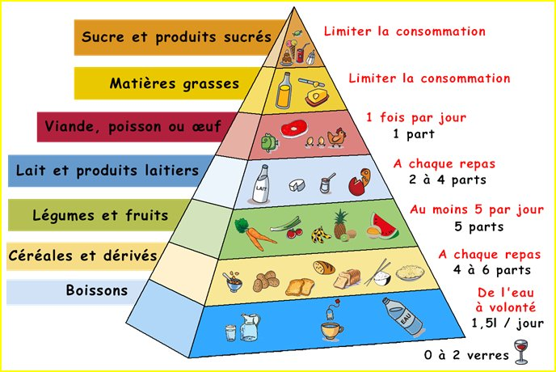
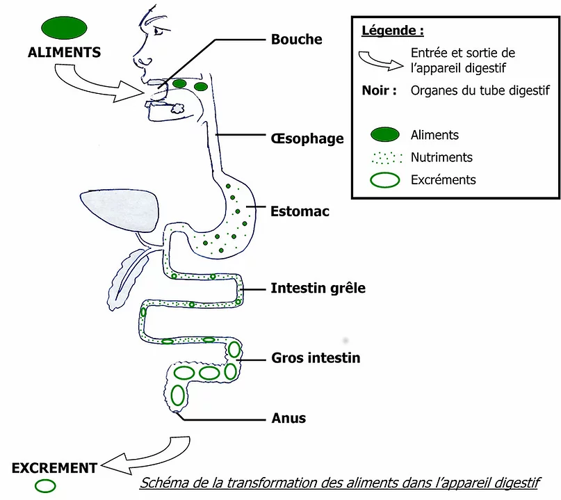
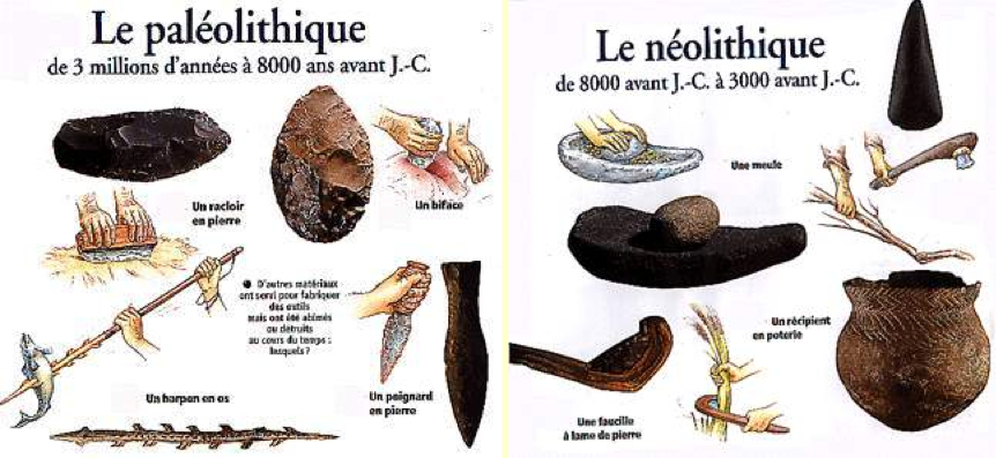
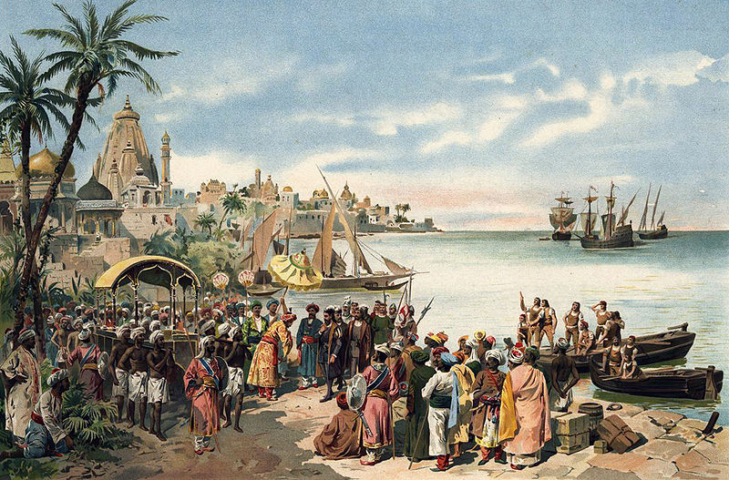
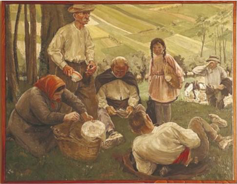
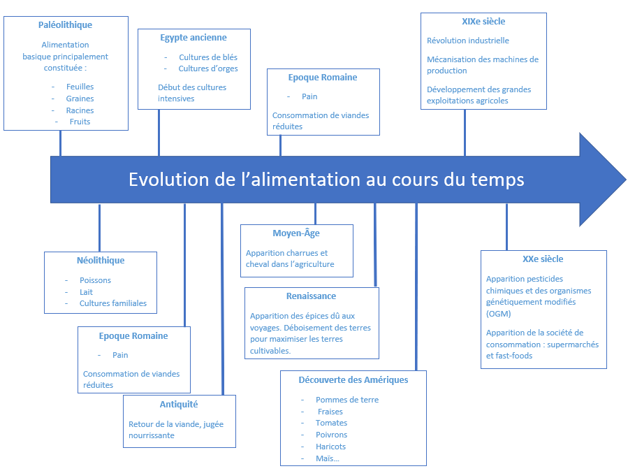

Pour commencer, il semble important de définir les termes composants ce sujet. Nous devons différencier la nutrition de l’alimentation. Donc, pour commencer l’alimentation désigne tout ce qui touche à la nourriture, après avoir été ingéré cela participe au métabolisme énergétique. Au cours de ce processus, les aliments sont transformés en nutriments. Les aliments sont regroupés en 7 classes dont la quantité consommée ne doit pas être égale mais doit respecter la hiérarchie de la pyramide alimentaire. L’alimentation est avant tout vitale pour l'homme, il est essentiel de se nourrir d’un point de vue biologique. Mais l’alimentation des populations a un aspect aussi culturel, ce n’est pas la même alimentation de partout dans le monde. L'alimentation c’est aussi chez l’Homme, le fait de récolter, produire, d’acheter des aliments, pour les cuisiner, les préparer, les consommer ce qui renvoient à des aspects sociaux-culturels et mêmes religieux (troubles, carêmes, jeunes, rituels de préparation, prières...).
Cette pyramide alimentaire montre l’importance d’une bonne alimentation. Elle regroupe les différents aliments selon leurs apports en vitamines. La classe en sommet de la pyramide représente le sucre et les produits sucrés dont la consommation doit être très faible et tout en bas de la pyramide on retrouve les boissons dont l'eau, qui est à consommer à volonté. Cette pyramide hiérarchise les meilleurs aliments jusqu’aux moins bons pour la santé et aussi elle hiérarchise la quantité à consommer de chaque aliment par jour ou par repas. La nutrition est définie comme étant une science médicale qui étudie les rapports entre l’alimentation et la santé. Après avoir été absorbés dans le corps, les aliments sont transformés en molécules par l’organisme au cours de la digestion. Après la digestion, ces molécules sont des nutriments regroupés en 3 classes qui permettent au corps de se construire et d’apporter de l'énergie suffisante au métabolisme. Dans ces trois classes, on retrouve les protéines, les lipides et les glucides. Cependant on peut différencier dans ces trois nutriments deux classes, les nutriments essentiels pour une bonne santé (protéines et lipides). Ces nutriments sont essentiels pour un bon métabolisme, de plus notre corps n’est pas capable de les fabriquer donc ils doivent être présents dans les aliments lors de l’alimentation. Les protéines (acides aminés) sont indispensables pour les anticorps, la construction d’hormones mais aussi essentiel dans la formation du corps humain (cheveux, muscles, os…). Les nutriments les plus énergétiques sont les lipides, ils construisent la membrane des cellules du corps humain et permettent un bon fonctionnement des organes.
Selon l’OMS (Organisation Mondiale de la Santé) la nutrition se définit comme l’apport alimentaire répondant aux besoins de l’organisme. Une bonne nutrition, c’est-à-dire un régime adapté et équilibré et la pratique régulière d’exercice physique sont autant de gages de bonne santé. Une mauvaise nutrition peut entraîner un affaiblissement de l’immunité, une sensibilité accrue aux maladies, un retard de développement physique et mental et une baisse de productivité.
L’OMS a donc mis en place des actions pour promouvoir la bonne alimentation. La première étant de mettre en place une stratégie mondiale pour l’alimentation, l’exercice physique et la santé, le deuxième point étant de promouvoir la consommation de fruits et de légumes. Le troisième point étant de réduire les apports en sel au niveau des populations et pour finir mettre un cadre pour une politique scolaire. Ici nous citons l’OMS comme référence mais il existe également des programmes nationaux pour promouvoir la bonne alimentation dans le monde. Par exemple en France il y a un programme national pour l’alimentation (PNA) lancé en 2010, il existe également d’autres programmes, comme le nouveau plan national nutrition santé (PNNS) c’est deux programmes sont regroupés dans un seul projet le programme national pour l’alimentation et la nutrition (PNAN) fixant des objectifs entre 2019 et 2023. Aujourd’hui ce programme à trois axes majeurs : la justice sociale (améliorer la qualité nutritionnelle de l’offre alimentaire, lutter contre la précarité alimentaire et renforcer l’information du consommateur), lutter contre le gaspillage alimentaire (jeter moins, c’est manger mieux) et pour finir l’éducation alimentaire (développer l’éducation à l’alimentation de la jeunesse et valoriser le patrimoine alimentaire). Ce programme comporte également deux leviers : le premier étant la restauration collective étant un partenaire gagnant pour l’alimentation et le second levier c’est des projets alimentaires territoriaux en unissant les forces locales au service d’une meilleure alimentation. Il existe bien d’autres programmes dans d’autres pays, mais nous ne ferons pas de liste exhaustive ici.
Nous allons donc parler de l’alimentation mais plus particulièrement de la nutrition car nous souhaitons voir les effets de l’alimentation sur la santé des individus.
Il est important également de faire un point sur l'histoire de l’alimentation. Jusqu’au paléolithique, l'alimentation était principalement constituée de viande et donc la chasse était un des moyens de s’alimenter. La chasse était leur principale activité, ils construisaient des armes afin de pouvoir augmenter leur profit. La chasse était leur seule chance de survie ce qui explique le fait que les hommes étaient nomades, ils se déplaçaient en fonction du gibier. Ils étaient appelés les chasseurs-cueilleurs, ils se nourrissaient de cueillettes de petits fruits sauvages. Après durant la période du néolithique l'alimentation se diversifie. A partir de là, le poisson, le lait ainsi que des petites cultures familiales vont permettre de nourrir l’Homme. Les hommes vont construire de plus en plus d’armes de chasse mais aussi de pêche. Ces armes sont très résistantes. L’arme dominante est l’épieu, elle permet de pêcher de nombreux poissons. Au fur et à mesure, l’Homme construit des armes de jet plus fort et plus loin qui augmente la grosseur de l’animal tué et donc son profit.
Pendant la période de l'Egypte ancienne les cultures de blé et d’orge vont se développer dû au fait que l’homme va devenir nomade et donc il va s’installer sur un territoire et les villages vont apparaître. L’agriculture va devenir intensive et commanditée par les dieux et le cycle des saisons et des étapes de production des denrées alimentaires ce qui n’est plus en compte aujourd’hui. Durant l’époque romaine, l’alimentation commence à se diversifier, le pain devient un aliment de base de l’alimentation grâce aux développement des fermes, ainsi l’alimentation est moins basée sur la viande. A la fin de l’Antiquité l’alimentation est de nouveau basée sur la viande car jugée plus nourrissante. Arrive ensuite le Moyen-âge, à partir de ce moment l’Homme cherche à produire plus, c’est l'apparition des charrues avec l’utilisation des chevaux. Les récoltes sont de plus en plus importantes avec une participation beaucoup plus faible de l’Homme, ce qui est donc plus rentable pour lui. A la fin du Moyen Age, de 1450 à 1500, les paysans mangent suffisamment et de façon variée , on parle de suffisance alimentaire. Cette alimentation variée est basée sur un système agricole.Cependant on constate que cela n’est pas suffisant pour permettre de vivre plus longtemps à cause des conditions difficiles. ( maladies, guerres…) Au XIIIème siècle, le vin est consommé ainsi que la bière. Les glucides représentent 80% de leur alimentation. Cependant leur alimentation est différente selon les occasions comme de nos jours. ( fêtes religieuses, mariages…). A la Renaissance, les premiers voyages vers les Indes vont faire apparaître les épices dans l’alimentation, et on cherche toujours à cultiver un maximum de terre, pour ça on déboise afin d’augmenter les terres cultivables.Le commerce des Indes a permis de faire connaître des épices que seules certaines certaines îles avaient la connaissance comme par exemple le clou de girofle. Ces épices sont caractérisées de marqueurs de tissage de liens entre les peuples et des cultures très éloignées. Ce commerce des Indes a permis d’ouvrir l’économie des épices dans le monde entier ce qui fait évoluer les traditions et les habitudes de l’Humanité.
Suite à la découverte des Amériques en 1492, le maïs et la pomme de terre deviennent des aliments de base des pauvres, cette découverte a également permis l’apparition de nouveaux produits dans l’alimentation. Mais ce n’est pas tout, d'autres aliments vont être rapportés des Amériques tels que les fraises, les tomates d’Amériques du Sud, les poivrons, les haricots de toutes les sortes et bien d’autres encore. Au cours du XVIe siècle il y a une malnutrition des paysans. Il y a une expansion des villes au détriment des terres cultivables. Il y a également une introduction de nouveaux produits exotiques mais profitant uniquement aux familles riches. A noter que les guerres de religion entraînent des famines. Ensuite, le XVIIe siècle est marqué par une misère paysanne, dû à l’accroissement des surfaces céréalières au détriment cette fois des espaces liés à l’élevage. Les nombreuses taxes imposent aux paysans de vendre une partie de leur récolte pour payer ces taxes. La base de l’alimentation reste le pain. Néanmoins, entre 1661 et 1663 des famines verront le jour dû aux récoltes médiocres faisant 130.000 morts sur les 20.000.000 de français à l’époque.
Famille de paysans dans un intérieur, par Louis le Nain, 1642 Musée du Louvre
Pour continuer, le XVIIIe siècle sera marqué par des famines et des épidémies. Ce siècle sera marqué par des épisodes de disettes dû aux conditions climatiques difficiles. En 1720 la peste viendra faire des dégâts. Jusqu’à la révolution les famines seront alternés par des périodes d’épidémie, Ainsi, l’alimentation est relativement pauvre. Ensuite au XIXe siècle, il n’y aura plus d’épisodes de famines mais plutôt de disettes. La révolution industrielle va jouer un rôle important notamment dans la mécanisation de la production agricole ce qui va favoriser le développement de grandes exploitations agricoles. De même la réforme agraire, la création d’écoles agroalimentaires, le développement des chemins de fer et l’industrialisation vont permettre de faire d'énormes avancées. Les progrès technologiques tels que le train vont eux aussi permettre l’exportation des marchandises, ou encore l’apparition des moissonneuses-batteuses vont permettre de cultiver des surfaces encore plus importantes. L’alimentation reste liée au statut social des individus. Au XXe siècle, des restrictions seront imposées suite aux deux guerres mondiales. Ensuite, il y a une évolution à partir des années 50 marquée par l’apparition des réfrigérateurs ou encore des congélateurs permettant de conserver les aliments. Il y a également l'invention des pesticides chimiques et également des OGM (organisme génétiquement modifié). De nouveaux comportements alimentaires vont voir le jour, l’alimentation va devenir beaucoup plus riche, notamment en viande, poisson, produit laitier, sucre. Les échanges mondiaux ainsi que la création d’industrie-agroalimentaire vont permettre ces changements. Mais c’est aussi à partir des années 50 que l’on va passer d’une économie de subsistance à l’économie de marché. De là que vont se développer les supermarchés, c’est le début de la surconsommation, c’est également le début des fast-food. Néanmoins, ces propos restent à contraster avec le fait que de nouvelles tendances alimentaires voient le jour. Comme on peut le constater, les régimes alimentaires sans viande ou encore sans produits venant des animaux se répandent de plus en plus pour plusieurs raisons. Ou encore des personnes qui réduisent de plus en plus leur consommation de viande, les flexitariens. Tous ces modes d’alimentations forment la diversité alimentaire du monde d’aujourd’hui. Il y a donc de forts contrastes au sein même d’un pays où l’on peut trouver des personnes qui cherchent à avoir une alimentation des plus saines possibles et d’autres personnes ne mangeant que des produits ultra transformés autrement dit de la malbouffe.
Pique-nique de paysans à Saint Sulpice la Forêt (Ille et Vilaine) 1937 par André Clochon
Ainsi, l’alimentation à constamment évolué au cours du temps. notamment ces dernières années. Les progrès ont commencé grâce à la sédentarisation de l’homme, lui permettant de cultiver les terres et donc d’augmenter les rendements. Malgré cela, durant des siècles il y a eu des problèmes de famines. Mais peu à peu les problèmes de famines se sont résolus notamment grâce aux problèmes techniques de l’agriculture, l’industrialisation ayant joué un rôle clé. En quelques années l’alimentation de base à drastiquement changée, grâce ou à cause au développement des produits industrielles et donc transformés. La part du budget consacré à l’alimentation a considérablement baissé en quelques dizaines d’années. En 1960, c’était 35% du budget, aujourd'hui c’est seulement11%.
L’alimentation est un processus qui touche tous les êtres humains. C’est pour cela que nous verrons dans ses aspects positifs et négatifs à partir de la période de la fin de la seconde guerre mondiale. Cette période a été choisie pour plusieurs raisons. Tout d’abord, nous souhaitions étudier une période assez récente car la malbouffe est apparue il y a quelques années, tout du moins la malbouffe telle que nous la connaissons à travers les fast-food ou encore les produits ultra transformés. Ensuite, pour trouver un maximum de données et d’informations il est plus simple d’étudier une période récente. L’alimentation est une activité qui touche comme nous l’avons dit tous les êtres humains malgré les différences de richesses. Le monde entier sera ici étudié. Nous avons choisi cette échelle pour pouvoir voir s’il y a des tendances qui se dessinent en fonction des pays développés ou en voie de développement. De plus après avoir fait le diagnostic au niveau mondial, nous pourrons faire des focus sur certaines régions voire même à plus petite échelle pour illustrer ces tendances. L’alimentation est une action qui construit notre vie et donc le territoire où nous vivons. Selon nos habitudes alimentaires, le territoire ne se construit pas de la même façon. Les pays n’ont pas un modèle unique concernant l’alimentation, certains pays en développement ayant une alimentation plus simple et basée uniquement sur quelques denrées. Ce choix n’est pas voulu par les populations, elle est dû à leur revenus mais aussi au niveau de développement de leur pays. A l'opposé, les pays développés ont une alimentation qui est fortement diversifiée et souvent très riche dû à leur entrée dans le commerce international en proposant en échange leur denrées spécifiques à leur pays. Concernant les Brics, l'acronyme donné aux pays émergents (Brésil, Russie, Inde, Chine et Afrique du Sud), leur économie ainsi que leur commerce sont en plein essor. S'agissant de leur alimentation, il préfère consacrer leur budget à une nourriture saine avec des produits plus frais que de consommer des produits de luxe ou matériels auxquelsils pourraient accéder maintenant. Néanmoins, il est difficile de faire des généralités car au sein même d’un pays il peut y avoir plusieurs types d’alimentation. Mais également l’essor des fast-food également dans les pays en développement chamboule complètement l’alimentation des populations qui y vivent. Ici nous évoquons les fast-food comme symbole de la “mauvaise alimentation” néanmoins ce n’est pas l’unique responsable de la malbouffe dans le monde. Tous les produits trop gras, trop sucrés, trop salés font partie des aliments considérés comme mauvais pour la santé et donc faisant partie de la malbouffe.
Et pour finir, nous allons faire un diagnostic économique. A travers ce diagnostic nous allons essayer de voir s’il y a des inégalités face à l’accès à une nourriture dite “saine” et bonne pour la santé. Et après avoir fait cela nous ferons une comparaison avec la malbouffe pour voir si c’est plus accessible pour les populations. L’alimentation a aussi un impact sur l'économie concernant l’emploi dans la filière alimentaire. Les premiers employés étaient des agriculteurs qui produisaient des légumes et des céréales sur ces terres familiales. Jusqu’à aujourd’hui avec des productions de produits ultra transformés qui génère une multitude d’emplois direct et également indirect.
created with
Website Builder Software .